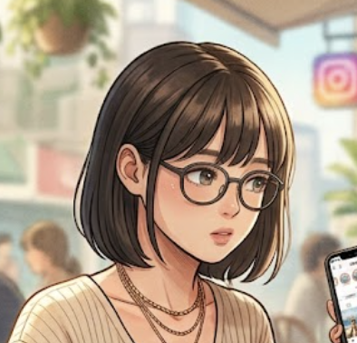
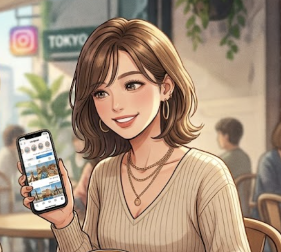
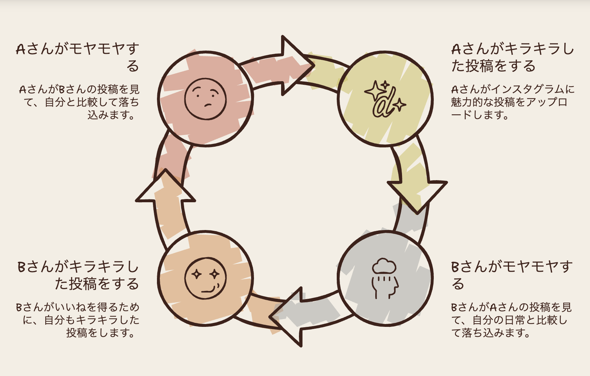

インスタのわな
なぜ見たあとモヤモヤするの？

くえり

でい太

ポン太
🎯 このレッスンでわかること
- ✓ なぜインスタを見るとモヤモヤするか、しくみがわかる
- ✓ インフルエンサーとインスタの「本音」がわかる
- ✓ インスタが止められないように作られているしくみがわかる
- ✓ 罠から抜け出すヒントがわかる
「なんでわたしだけ…？」
友だちの楽しそうな投稿。おしゃれなカフェの写真。旅行先でのキラキラした笑顔。
それを見ていると、なぜか自分の毎日がつまらなく感じてしまうことがある。
❓ 考えてみよう
友だちの楽しそうな投稿を見て、モヤッとしたことはある？
でも、本当にみんなの毎日はあんなにキラキラしているのかな？
くえり

キラリ姉さん
くえり
キラリ姉さん
📊 SNSで見えているもの / 見えていないもの
見えている（投稿される）
見えない（投稿されない）
みんなの投稿＝「人生のハイライト集」。その投稿と自分のふつうの毎日を比べたら、モヤモヤするのは当然だよ。
でい太
「いいね」がほしくてたまらない
くえり
キラリ姉さん
いいね＝他人がくれる「点数」
いいねが多い＝自分の価値が高い、と感じてしまう。でも本当の自分の価値は、他人がつける数字で決まるものじゃないよね。
「映える」かどうかで行動を選んでしまう
「これ投稿したらいいねもらえるかな？」と考えて行動を選ぶようになったら要注意。自分の「楽しい」より、他人の「いいね」を優先してしまっているかもしれない。
キラリ姉さん

そしてこのループが回るほど…
みんながインスタをたくさん使う → 広告がたくさん表示される → インスタの広告収入がアップ 💰
でい太
キラリ姉さん
ポン太
なぜ止められない？
くえり
キラリ姉さん
終わりのないスクロール
本には最後のページがあるし、テレビ番組には終わりの時間がある。でもSNSのタイムラインには「おわり」がない。下にスクロールすればするほど、新しい投稿がずっと出てくる。「ここまで見たら終わり」という区切りが、わざと作られていないんだ。
ガチャと同じしくみ
画面を引っ張って更新すると、新しい投稿が出てくる。これ、実はガチャを引くのと同じしくみ。「次はもっと面白い投稿が出るかも」「次はもっとすごい写真が見られるかも」。当たりが出るかもしれないと思うと、何度も何度も引いてしまうんだ。
AIがあなたの「好き」を知っている
インスタにはAI（人工知能）が入っていて、あなたがどんな投稿に「いいね」したか、どの写真を長く見たか、全部覚えている。そして「この子はこういうのが好きだな」と予測して、つい見たくなる投稿ばかりを並べてくる。好きなものしか出てこないから、止まれなくなるんだ。
📊 罠が深くなるしくみ
でい太
ポン太
あなたの時間を狙っている
くえり
キラリ姉さん
「今見ないと消えちゃう！」
24時間で消えるストーリーズは、「見逃したくない」という不安を使って何度もアプリを開かせる仕掛け。これを英語でFOMO（フォーモ）＝「見逃す不安」と言うよ。
キラリ姉さん
狙い撃ち通知のしくみ
インスタは、あなたがいつスマホを開いたか、いつ一番長く使ったかを全部記録している。
「たまたま通知が来た」と思っていたのに、実はあなたが一番開きやすい瞬間を狙い撃ちされていたということ。
でい太
キラリ姉さん
ポン太
罠を知れば、自分で選べる
くえり
キラリ姉さん
💡 インスタの良いところ
インスタ自体が悪いわけじゃない。罠のしくみを知って、自分でコントロールすることが大事だよ。
✅ 罠から抜け出す6つのヒント
通知をオフにする
狙い撃ち通知に振り回されなくなる。「自分のタイミング」でアプリを開こう。
時間制限を設定する
スクリーンタイムやアプリの使用時間リマインダーを使って、「ここまで」を自分で決める。
モヤッとする相手はミュートする
比較してつらくなる相手のフォローを外す・ミュートする。自分の心を守るのは悪いことじゃない。
モヤッとしたら、立ち止まる
「あ、今モヤッとしたな」と感じたら、一度スマホを置いてみよう。「この投稿はその人の楽しい瞬間だけなんだな」と気づけたら、それだけで見え方が変わるよ。
他人と比べるのではなく、「昨日の自分」「なりたい自分」と比べる
他人との"横の比較"ではなく、過去の自分→今の自分→なりたい自分という"縦の軸"で考えよう。「昨日の自分より、少しだけ上手くなった！」「将来どんな自分になりたいかな？」と想像してみるのもいいね。
自分が夢中になれることを見つけて打ち込む
スポーツ、絵、音楽、プログラミング、何でもいい。自分が本当に好きなことに一生けんめい打ち込んでいるとき、他人のキラキラは気にならなくなる。それが比較から抜け出す一番の方法だよ。
くえり
モヤモヤしてたのは、わたしが弱いからじゃなくて、モヤモヤするように作られていたから。
他人のキラキラと比べるんじゃなくて、昨日の自分よりちょっとだけ成長すること。将来なりたい自分に向かって進むこと。それがわたしの「じぶん軸」だ。」
でい太
ポン太
🖊 やってみよう
Q1. インスタの投稿が"キラキラ"して見えるのはなぜ？（3択）
Q2. SNSがあなたの"一番スマホを開きやすい時間"に通知を送るのはなぜ？（3択）
Q3. SNSを見てモヤモヤしたこと、ある？ それはどんなとき？
💬 こたえのれい
- 友だちが遊んでいる写真を見て「自分だけ誘われてない」と感じた
- おしゃれな投稿を見て、自分の毎日がつまらなく思えた
- いいねが少なくて、自分の写真がダメだったのかなと思った
モヤモヤするのは自然なこと。大事なのは「なぜモヤモヤしたか」に気づけることだよ。
Q4. 罠から抜け出すために、明日からじぶんでやってみることを1つ書こう。
💬 こたえのれい
- インスタの通知をオフにして、自分のタイミングで開く
- スクリーンタイムで1日30分までに設定する
- モヤッとする相手をミュートしてみる
- SNSを見る時間を、好きなことに使ってみる
- 「将来なりたい自分」をノートに書いてみる
保護者の方へ
このページでは、インスタ等のSNSが若者に与える「比較による劣等感」「承認欲求への依存」「中毒性の設計」「FOMO（見逃す不安）と狙い撃ち通知」について、子ども向けに解説しました。同時に、正しく使えば良い道具にもなることも伝えています。より詳しく知りたい方向けに、参考ページをご紹介します。